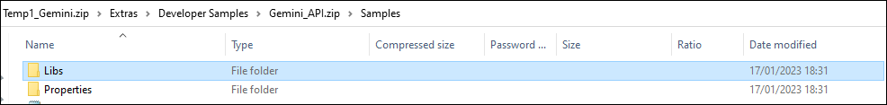
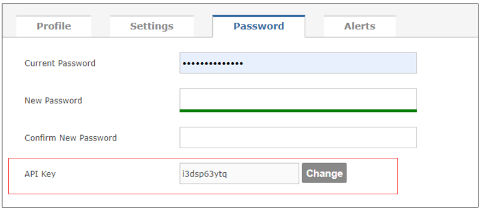

Code samples are in the Gemini zip file, which you download to install the application. You should use the libraries that match your installed version of Gemini, which you can determine by looking in the footer of the Gemini web page. The path to the samples in the zip file is 'Extras\Developer Samples\Gemini_API.zip.' In Gemini_API.zip, you will find code samples and the libs folder containing the Gemini dlls you must compile against.
You can downloadthe latest Gemini zip file from here. If you're not on the latest version of Gemini, and you don't have the zip file that matches your version, contact Countersoft Support and someone will get you the zip file from the archive.
The only supported format is JSON.
Your API key is in your user profile (top right of the page, click on your name), on the Password tab.
When using Windows Authentication, the constructor takes username, password, and a flag to indicate if you are using Windows Authentication or not. The username (no password) for Windows Authentication must be in format "domain\user". You can find more documentation on REST Api authentication here.
Alternatively you can create a second site with a connection string pointing to the same database, that uses Forms authentication, and exists only for the API. Countersoft do not charge the usual fee for a second site provided it is only used for this purpose.
No. The API Key in web.config's "appSettings" section is for source code integration (with GitHub etc).